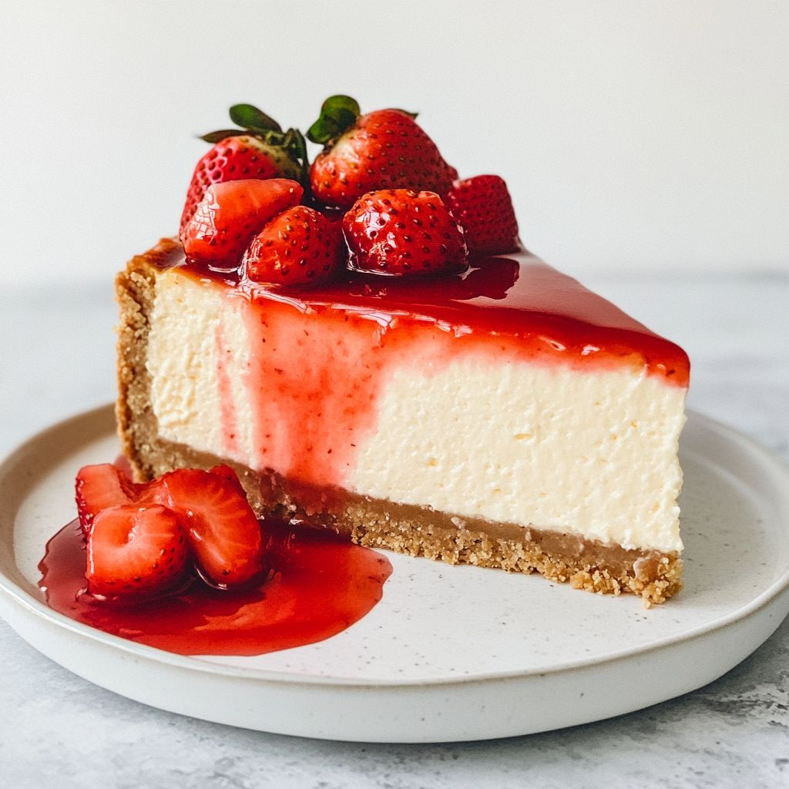

-
Cheesecake de Fresa
Ingredientes: Galletas, queso crema, azúcar, fresas frescas, mantequilla.
Receta: Tritura las galletas con mantequilla y coloca en el fondo del molde. Mezcla el queso crema con azúcar y vierte sobre la base. Decora con fresas.

-
Tarta de Limón
Ingredientes: Galletas, mantequilla, leche condensada, jugo de limón.
Receta: Prepara la base con galletas y mantequilla. Mezcla leche condensada y jugo de limón, vierte sobre la base y refrigera hasta que tome consistencia.
-
Brownie de Chocolate
Ingredientes: Chocolate oscuro, mantequilla, azúcar, huevos, harina.
Receta: Derrite el chocolate con la mantequilla, añade los demás ingredientes y hornea por 25 minutos. Sirve con helado.